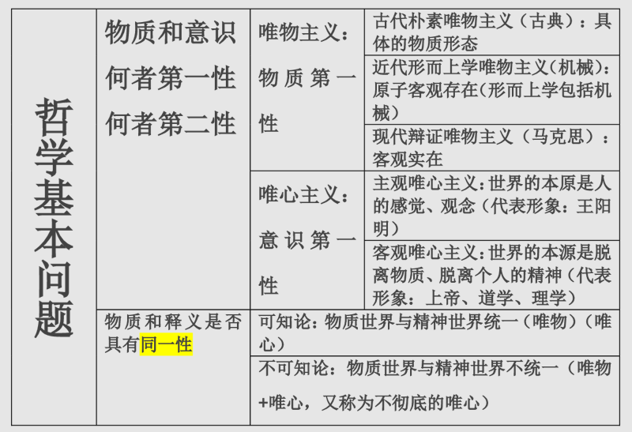
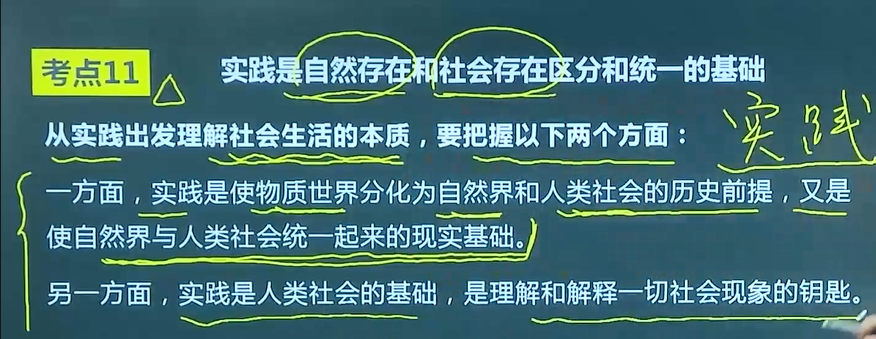
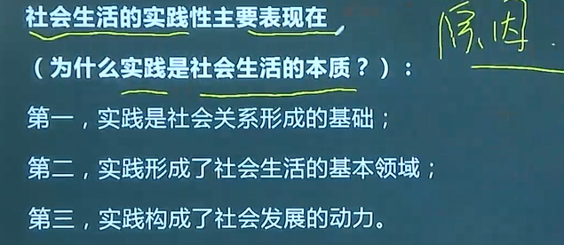
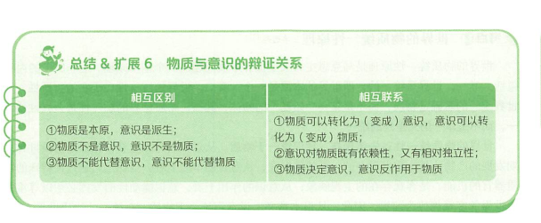
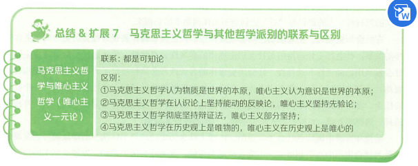
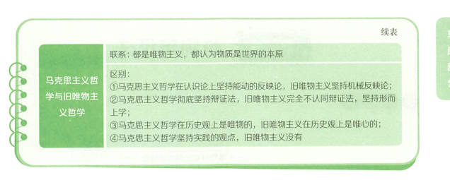

马克思主义基本原理
第一章 马克思主义原理
马克思主义内容和马克思主义基本原理
马克思构成三部分之间的关系：马哲是基础方法，马克思政治经济是主体，科学社会主义是目的、归宿。马克思用马哲的方法写了政经的知识得出了科社的结论。
马克思的基本立场、基本观点、基本方法
基本立场
以无产阶级的解放和全人类的解放为己任，以人的自由全面发展为目标，以人民为中心，一切为了人民，一切依靠人民。
基本观点
是关于自然、社会、人类思维发展的科学认识，是人类思想成果和社会实践经验的科学总结。
基本方法
是建立在辩证唯物主义和历史唯物主义世界观和方法论基础上，指导我们正确认识世界和改造世界的思想方法和工作方法，主要包括实事求是的方法、辩证分析的方法、社会基本矛盾和主要矛盾分析的方法、历史分析的方法、阶级分析的方法、群众路线的方法等。
考点！！！：单选题选前两个，多选题选后三个
马克思主义来源
世界上第一个无产阶级政党：
共产主义者同盟
马克思主义公开问世的标志：
1848年2月《共产党宣言》
马克思主义产生的条件：
资本主义经济的发展为马克思主义的产生提供了经济、社会历史条件和基础
社会根源：
问：马克思主义产生的经济基础、社会基础/社会根源？
资本主义经济的发展为马克思主义的产生提供了经济、社会历史条件和基础
阶级基础：
问：阶级基础/实践基础？
无产阶级在反抗资产阶级的斗争中逐步走向自觉，对科学理论的指导提出了强烈的需求
思想渊源：
德国古典哲学、英国古典政治经济学、英法两国的空想社会主义
考点书籍
| 马、恩、列书籍 | ||
|---|---|---|
| 马克思、恩格斯 | 1844.2.《德法年鉴》 | 他们完成了从唯心主义向唯物主义、从革命民主主义向共产主义的转变，为创立马克思主义奠定了思想前提 |
| 1845《德意志意识形态》 | 第一次比较系统地阐述了历史唯物主义基本原理 | |
| 1848.2.《共产党宣言》 | 标志马克思主义问世，无产阶级第一个党纲 | |
| 马克思 | 1867《资本论》 | 阐述了剩余价值学说 |
| 《法兰西内战》 | 科学总结了巴黎公社的历史经验和教训 | |
| 《哥达纲领批判》 | 进一步丰富了科学社会主义学说 | |
| 恩格斯 | 1876-1878《反杜林论》 | 全面阐述了马克思主义理论体系 |
| 《家庭私有制和国家的起源》 | 关于古代社会发展规律和国家起源 | |
| 列宁 | 《国家与革命》 | 为了恢复和捍卫被修改的马克思主义的 |
| 《帝国主义是资本主义的最高阶段》 | 阐述了帝国主义时期经济和政治发展的不平衡 | |
| 《唯物主义和经验批判主义》 | 给马赫主义反动哲学以毁灭性打击 | |
| 《论欧洲联邦口号》《无产阶级革命的军事纲领》 |
马克思主义的鲜明特征
科学性（独有）
马克思主义是对自然、社会和人类思维发展本质和规律的正确反馈（马克思永远正确）
革命性
彻底的批判精神（对以往理论都批判，而非都否定）、鲜明的无产阶级立场。
实践性（独有）
马克思主义是从实践中开、到实践中去，在实践中接收检验，并随实践而不断发展的学说。实践性是马克思主义理论区别于其他理论的显著特征。
人民性（人民至上是政治立场）
马克思主义的人民性是以阶级性为深刻基础的，是无产阶级先进性的表现。（只要你是在为无产阶级服务你就是在人民服务）
发展开放性
马克思主义是不断发展的学说，具有与时俱进的理论品质
列：
（选择题）马克思主义强大生命力的根源为实践性+科学性+革命性
第二章 马克思主义哲学
哲学的基本问题及不同流派

现代辩证唯物主义包括古代朴素唯物主义、近代形而上学唯物主义。
重要问题：世界是怎样存在的？
辩证法：用联系的、发展的、全面的、有矛盾的观点看世界
形而上学：用孤立的、静止的、片面的、无矛盾的观点看世界
马克思在哲学史上的两大历史贡献
1、创立历史唯物主义（唯物史观）
2、形成了辩证唯物主义
唯物论 ：世界是什么
物质观
物质范畴
物质与运动
运动与禁止
物质运动与时空
意识观


补充：
- 第一点：特别是生产劳动实践
- 第三点： 社会发展的动力是社会基本矛盾
起源
p10
本质
p11
作用
p11
意识与物质的辩证关系

物质靠实践相互转换
相互依赖、相对独立
考区别不能选联系，考联系不能选区别
p12 主观能动性和客观规律性的统一
世界的物质统一性原理
p13
马克思主义哲学与其他哲学派别的联系与区别

